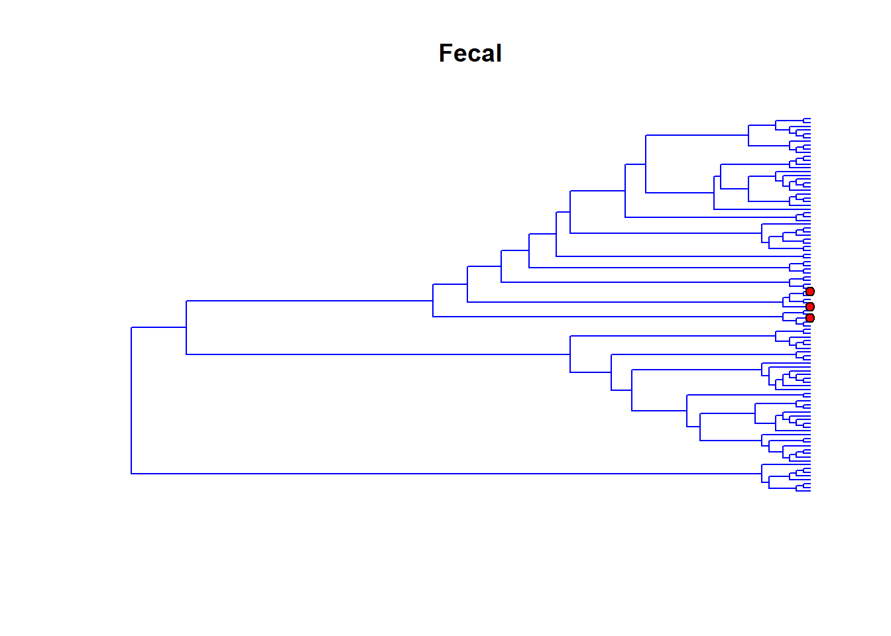
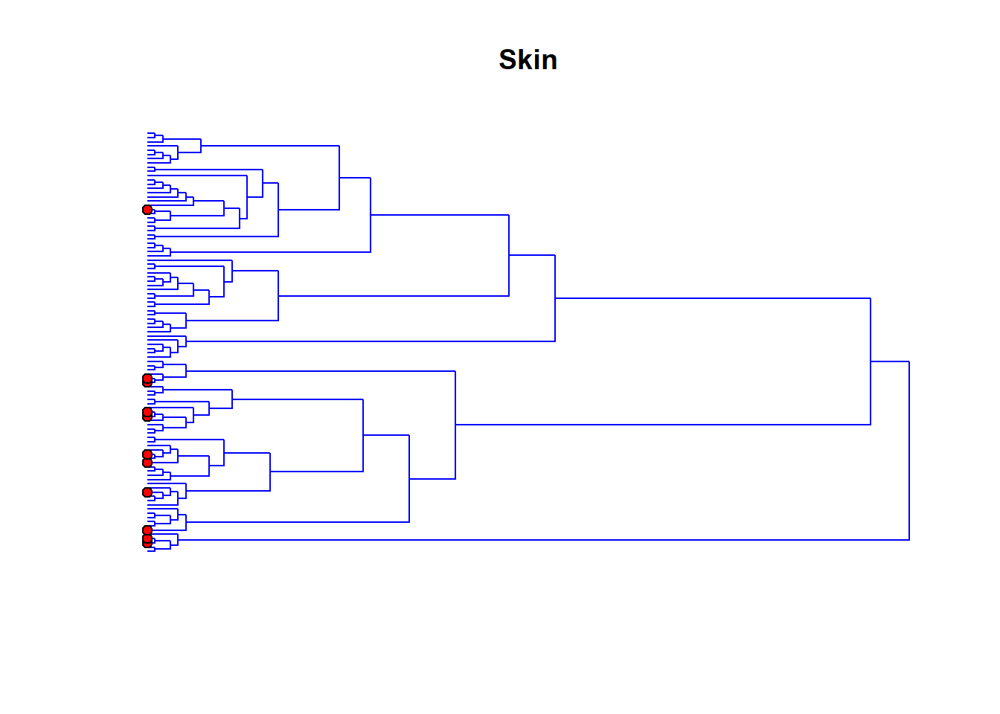
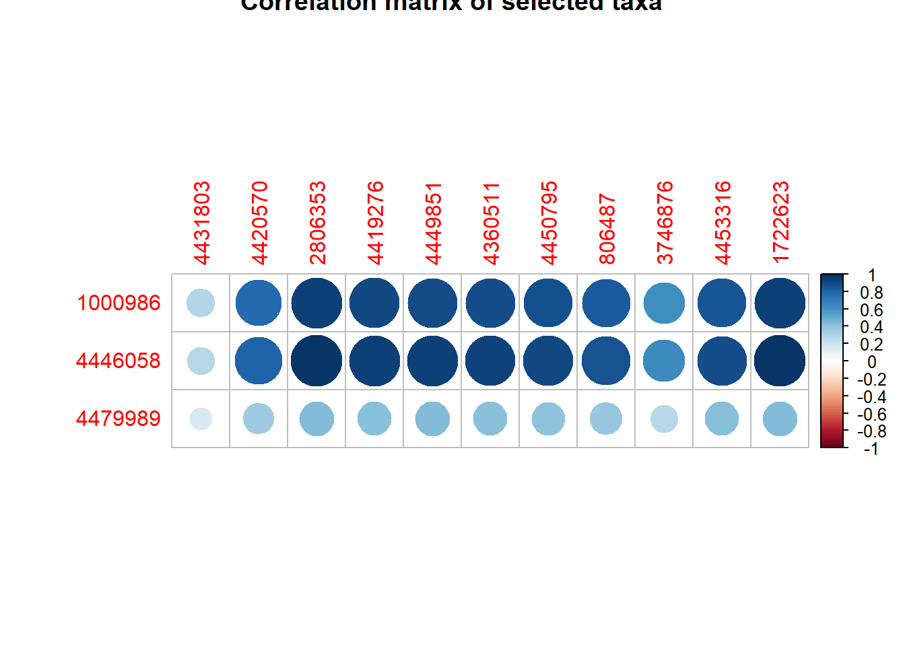
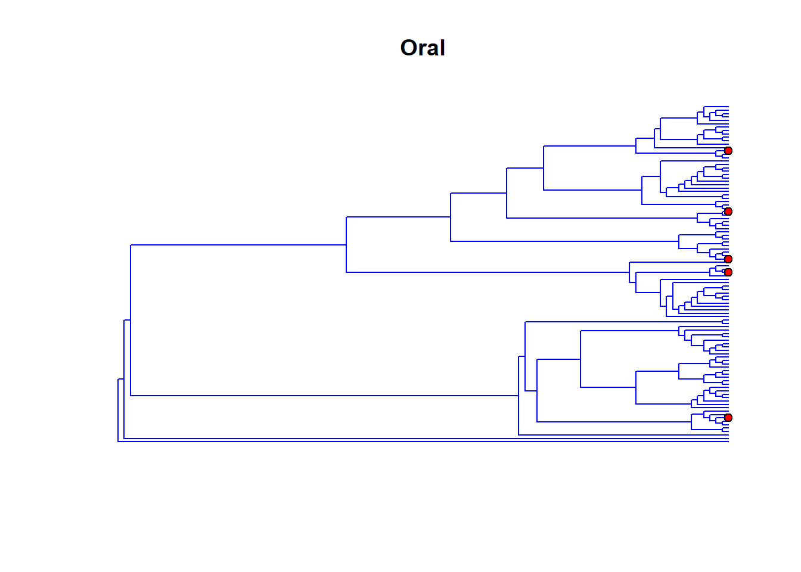
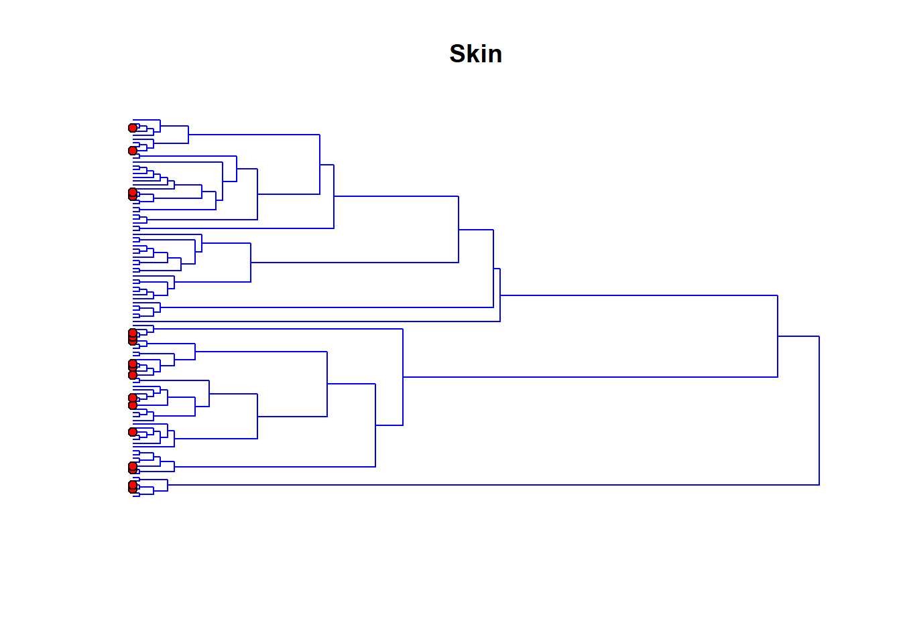
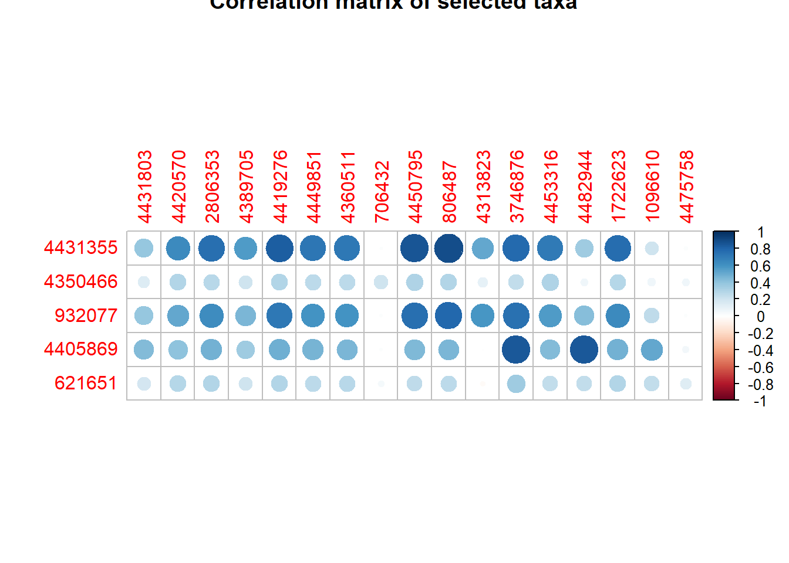

Last updated: 2018-01-07
Code version: 8b0aa1e
American Gut project is
library(scca)
library(ape)
library(corrplot)
#study the fecal and skin
#generate structural matrix
dim(fecal_skin$X)[1] 479 100Sx=GenStrucMat(fecal_skin$X,fecal_skin$Tree_S1,wcorr=T,h=0.3)
Sy=GenStrucMat(fecal_skin$Y,fecal_skin$Tree_S2,wcorr=T,h=0.3)
dim(Sx)[1] 67 100dim(Sy)[1] 41 100mod_fecal_skin=gscca.bic(fecal_skin$X,fecal_skin$Y,gamma.u=c(0.5,1.5,2.5),gamma.v=c(1.5,2,3),Sx=Sx,Sy=Sy)
#plot the three, label the correlated ones
i_x=which(mod_fecal_skin$u!=0)
i_y=which(mod_fecal_skin$v!=0)
plot(fecal_skin$Tree_S1,show.tip.label = F,use.edge.length = F,edge.color = 4,main='Fecal')
tiplabels(tip=i_x,pch=21,bg='red')
plot(fecal_skin$Tree_S2,show.tip.label = F,use.edge.length = F,edge.color = 4,direction = 'leftwards',main='Skin')
tiplabels(tip=i_y,pch=21,bg='red')
#find the name
TaxaRank = c("Kingdom", "Phylum", "Class", "Order", "Family", "Genus", "Species")
colnames(fecal_skin$Taxa_S1)=TaxaRank
colnames(fecal_skin$Taxa_S2)=TaxaRank
name_fecal=fecal_skin$Taxa_S1[match(colnames(fecal_skin$X)[i_x],rownames(fecal_skin$Taxa_S1)),]
name_skin=fecal_skin$Taxa_S2[match(colnames(fecal_skin$Y)[i_y],rownames(fecal_skin$Taxa_S2)),]
#write.table(name_fecal,file='fecal_skin_fecal.csv')
#write.table(name_skin,file='fecal_skin_skin.csv')
name_fecal Kingdom Phylum Class Order
1000986 "Bacteria" "Actinobacteria" "Actinobacteria" "Actinomycetales"
4446058 "Bacteria" "Firmicutes" "Bacilli" "Bacillales"
4479989 "Bacteria" "Firmicutes" "Bacilli" "Lactobacillales"
Family Genus Species
1000986 "Corynebacteriaceae" "Corynebacterium" ""
4446058 "Staphylococcaceae" "Staphylococcus" "aureus"
4479989 "Streptococcaceae" "Streptococcus" "" name_skin Kingdom Phylum Class
4431803 "Bacteria" "Cyanobacteria" "Chloroplast"
4420570 "Bacteria" "Cyanobacteria" "Chloroplast"
2806353 "Bacteria" "Proteobacteria" "Gammaproteobacteria"
4419276 "Bacteria" "Proteobacteria" "Gammaproteobacteria"
4449851 "Bacteria" "Proteobacteria" "Gammaproteobacteria"
4360511 "Bacteria" "Proteobacteria" "Gammaproteobacteria"
4450795 "Bacteria" "Proteobacteria" "Gammaproteobacteria"
806487 "Bacteria" "Proteobacteria" "Gammaproteobacteria"
3746876 "Bacteria" "Proteobacteria" "Alphaproteobacteria"
4453316 "Bacteria" "Proteobacteria" "Alphaproteobacteria"
1722623 "Bacteria" "Firmicutes" "Bacilli"
Order Family Genus
4431803 "Streptophyta" "" ""
4420570 "Streptophyta" "" ""
2806353 "Xanthomonadales" "Xanthomonadaceae" "Stenotrophomonas"
4419276 "Pseudomonadales" "Pseudomonadaceae" "Pseudomonas"
4449851 "Enterobacteriales" "Enterobacteriaceae" ""
4360511 "Enterobacteriales" "Enterobacteriaceae" "Serratia"
4450795 "Pseudomonadales" "Moraxellaceae" "Acinetobacter"
806487 "Pseudomonadales" "Moraxellaceae" "Acinetobacter"
3746876 "Rickettsiales" "mitochondria" "Carludovica"
4453316 "Rickettsiales" "mitochondria" "Sarcandra"
1722623 "Lactobacillales" "Lactobacillaceae" "Lactobacillus"
Species
4431803 ""
4420570 ""
2806353 ""
4419276 ""
4449851 ""
4360511 ""
4450795 ""
806487 ""
3746876 "palmata"
4453316 "grandifolia"
1722623 "" #heat map of selected variables
corrplot(cor(fecal_skin$X[,i_x],fecal_skin$Y[,i_y]),main='Correlation matrix of selected taxa')
#oral and skin
dim(oral_skin$X)[1] 426 100Sx=GenStrucMat(oral_skin$X,oral_skin$Tree_S1,wcorr=T,h=0.3)
Sy=GenStrucMat(oral_skin$Y,oral_skin$Tree_S2,wcorr=T,h=0.3)
dim(Sx)[1] 60 100dim(Sy)[1] 50 100#2.0, 1.8
mod_oral_skin=gscca.bic(oral_skin$X,oral_skin$Y,gamma.u=c(1.7,1.8,1.9,2,2.5),gamma.v=c(1,1.6,1.8,2,2.5),Sx=Sx,Sy=Sy)
#plot the three, label the correlated ones
i_x=which(mod_oral_skin$u!=0)
i_y=which(mod_oral_skin$v!=0)
plot(oral_skin$Tree_S1,show.tip.label = F,use.edge.length = F,edge.color = 4,main='Oral')
tiplabels(tip=i_x,pch=21,bg='red')
plot(oral_skin$Tree_S2,show.tip.label = F,use.edge.length = F,edge.color = 4,direction = 'leftwards',main='Skin')
tiplabels(tip=i_y,pch=21,bg='red')
#find the name
TaxaRank = c("Kingdom", "Phylum", "Class", "Order", "Family", "Genus", "Species")
colnames(oral_skin$Taxa_S1)=TaxaRank
colnames(oral_skin$Taxa_S2)=TaxaRank
name_oral=oral_skin$Taxa_S1[match(colnames(oral_skin$X)[i_x],rownames(oral_skin$Taxa_S1)),]
name_skin=oral_skin$Taxa_S2[match(colnames(oral_skin$Y)[i_y],rownames(oral_skin$Taxa_S2)),]
#write.table(name_oral,file='oral_skin_oral.csv')
#write.table(name_skin,file='oral_skin_skin.csv')
name_oral Kingdom Phylum Class
4431355 "Bacteria" "Proteobacteria" "Betaproteobacteria"
4350466 "Bacteria" "Bacteroidetes" "Flavobacteriia"
932077 "Bacteria" "Actinobacteria" "Actinobacteria"
4405869 "Bacteria" "Fusobacteria" "Fusobacteriia"
621651 "Bacteria" "Firmicutes" "Clostridia"
Order Family Genus
4431355 "Neisseriales" "Neisseriaceae" ""
4350466 "Flavobacteriales" "[Weeksellaceae]" ""
932077 "Actinomycetales" "Micrococcaceae" "Rothia"
4405869 "Fusobacteriales" "Fusobacteriaceae" "Fusobacterium"
621651 "Clostridiales" "[Mogibacteriaceae]" ""
Species
4431355 ""
4350466 ""
932077 "mucilaginosa"
4405869 ""
621651 "" name_skin Kingdom Phylum Class
4431803 "Bacteria" "Cyanobacteria" "Chloroplast"
4420570 "Bacteria" "Cyanobacteria" "Chloroplast"
2806353 "Bacteria" "Proteobacteria" "Gammaproteobacteria"
4389705 "Bacteria" "Proteobacteria" "Betaproteobacteria"
4419276 "Bacteria" "Proteobacteria" "Gammaproteobacteria"
4449851 "Bacteria" "Proteobacteria" "Gammaproteobacteria"
4360511 "Bacteria" "Proteobacteria" "Gammaproteobacteria"
706432 "Bacteria" "Proteobacteria" "Gammaproteobacteria"
4450795 "Bacteria" "Proteobacteria" "Gammaproteobacteria"
806487 "Bacteria" "Proteobacteria" "Gammaproteobacteria"
4313823 "Bacteria" "Proteobacteria" "Gammaproteobacteria"
3746876 "Bacteria" "Proteobacteria" "Alphaproteobacteria"
4453316 "Bacteria" "Proteobacteria" "Alphaproteobacteria"
4482944 "Bacteria" "Firmicutes" "Bacilli"
1722623 "Bacteria" "Firmicutes" "Bacilli"
1096610 "Bacteria" "Firmicutes" "Clostridia"
4475758 "Bacteria" "Firmicutes" "Clostridia"
Order Family Genus
4431803 "Streptophyta" "" ""
4420570 "Streptophyta" "" ""
2806353 "Xanthomonadales" "Xanthomonadaceae" "Stenotrophomonas"
4389705 "Burkholderiales" "Comamonadaceae" "Alicycliphilus"
4419276 "Pseudomonadales" "Pseudomonadaceae" "Pseudomonas"
4449851 "Enterobacteriales" "Enterobacteriaceae" ""
4360511 "Enterobacteriales" "Enterobacteriaceae" "Serratia"
706432 "Pseudomonadales" "Moraxellaceae" "Acinetobacter"
4450795 "Pseudomonadales" "Moraxellaceae" "Acinetobacter"
806487 "Pseudomonadales" "Moraxellaceae" "Acinetobacter"
4313823 "Pseudomonadales" "Moraxellaceae" "Psychrobacter"
3746876 "Rickettsiales" "mitochondria" "Carludovica"
4453316 "Rickettsiales" "mitochondria" "Sarcandra"
4482944 "Lactobacillales" "Leuconostocaceae" "Leuconostoc"
1722623 "Lactobacillales" "Lactobacillaceae" "Lactobacillus"
1096610 "Clostridiales" "[Tissierellaceae]" "Finegoldia"
4475758 "Clostridiales" "Veillonellaceae" "Veillonella"
Species
4431803 ""
4420570 ""
2806353 ""
4389705 ""
4419276 ""
4449851 ""
4360511 ""
706432 ""
4450795 ""
806487 ""
4313823 ""
3746876 "palmata"
4453316 "grandifolia"
4482944 ""
1722623 ""
1096610 ""
4475758 "dispar" corrplot(cor(oral_skin$X[,i_x],oral_skin$Y[,i_y]),main='Correlation matrix of selected taxa')
sessionInfo()R version 3.4.0 (2017-04-21)
Platform: x86_64-w64-mingw32/x64 (64-bit)
Running under: Windows 10 x64 (build 16299)
Matrix products: default
locale:
[1] LC_COLLATE=English_United States.1252
[2] LC_CTYPE=English_United States.1252
[3] LC_MONETARY=English_United States.1252
[4] LC_NUMERIC=C
[5] LC_TIME=English_United States.1252
attached base packages:
[1] stats graphics grDevices utils datasets methods base
other attached packages:
[1] corrplot_0.84 ape_5.0 scca_0.1.0 phyloseq_1.20.0
[5] dirmult_0.1.3-4 glmnet_2.0-13 foreach_1.4.3 genlasso_1.3
[9] igraph_1.1.2 Matrix_1.2-9 MASS_7.3-47 PMA_1.0.9
[13] impute_1.50.1 plyr_1.8.4
loaded via a namespace (and not attached):
[1] reshape2_1.4.2 splines_3.4.0 lattice_0.20-35
[4] rhdf5_2.20.0 colorspace_1.3-2 htmltools_0.3.5
[7] stats4_3.4.0 yaml_2.1.16 mgcv_1.8-17
[10] survival_2.41-3 rlang_0.1.2 BiocGenerics_0.22.0
[13] stringr_1.2.0 zlibbioc_1.21.0 Biostrings_2.43.8
[16] munsell_0.4.3 gtable_0.2.0 codetools_0.2-15
[19] evaluate_0.10 Biobase_2.35.1 knitr_1.15.1
[22] permute_0.9-4 IRanges_2.9.19 biomformat_1.4.0
[25] parallel_3.4.0 Rcpp_0.12.14 backports_1.0.5
[28] scales_0.4.1 vegan_2.4-4 S4Vectors_0.13.17
[31] jsonlite_1.4 XVector_0.15.2 ggplot2_2.2.1
[34] digest_0.6.13 stringi_1.1.6 grid_3.4.0
[37] ade4_1.7-6 rprojroot_1.3-1 tools_3.4.0
[40] magrittr_1.5 lazyeval_0.2.0 tibble_1.3.3
[43] cluster_2.0.6 pkgconfig_2.0.1 data.table_1.10.4
[46] rmarkdown_1.8 iterators_1.0.8 multtest_2.32.0
[49] nlme_3.1-131 git2r_0.20.0 compiler_3.4.0 This R Markdown site was created with workflowr